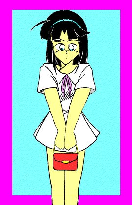
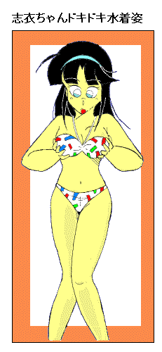

「志衣ちゃん、準備はできた？ もう出かけるわよ」
「志衣ちゃん、準備はできた？ もう出かけるわよ」わたしの部屋のドアの外からお母さんの声が聞こえた。
七月も中ごろの日曜日。わたしはお母さんと、お買い物に出かける事になった。そして、着替えに時間がかかっているわたしをお母さんが呼びに来たのだった。
「でも・・・、お母さん。この服で出かけるの？」
「かわいいワンピースでしょう、今日のお出かけの為にお母さんが買ってきておいたんだから」
「たしかに白のかわいいワンピースだけど・・・、スカートのたけが短くない?」
「志衣ちゃん、いまどきの女の子はひざ上のスカートなんて当たり前よ。志衣ちゃんは美人なんだからそれを引き立てるシンプルな服が良いと思ってワンピース選んだんだけど、気に入らないかしら？」
「ワンピースそのものは、かわいくて気に入いったけど・・・じゃなくって、ミニスカートはちょっと恥ずかしいよ」
「女の子がこれくらいのスカートのたけで恥ずかしがってどうするの？、志衣ちゃん」
「だってお母さん、学校の制服でスカートが慣れたっていったって普段着はずっとズボンだったし・・・。つい半年前まで僕は男だったんだから・・・」
わたし・・・、僕は半年前に女の子になってしまった。まあその詳しい話は別の所で話したいと思う（*シアワセの価値です）。名前も志衣(僕が今の女の子の体で両親の元に帰ったときに、僕の今の体の名前が人工人間のＣ-0001型なので、 お母さんが僕を「Ｃちゃん」と呼んだので「シイ」を名前の音にした。「シイ」と読みに、僕の元の名前「高志」の「志」をとって「志衣」となった)という女の子にの名前に変えた。そして引越しもして、今年の四月に今通っている学校に転校した。
転校した今の学校でも、ちょっとした事件もあった。この話も別にきっちりとお話しようと思う（*シアワセのかたちです）。そして同姓の親友、つまり今の女の子のわたしの友達もできて、もうすぐ来る夏休みになったら女友達四人で海に泊りがけで出かけることに決まっていた。
（*）は作者注
わたしはお母さんに連れられて、駅にして三つ電車に乗ってお買い物の目的地にやってきた。
「さあ、志衣ちゃんまずはここで買い物よ」
とお母さんに連れられて、わたしはあるデパートに入っていった。
「デパートか、久しぶりだね。一年ぶり以上かな」
わたしはつぶやいた。
「志衣ちゃんはあんまり外に出たがらなかったもんね、ここ半年」
「・・・だって、恥かしいもん」
「でも、今日ここに来てるって事は女の子に慣れて来たって事よね」
「うん、まあ・・・すこしはね」
わたし達はエスカレーターで上の階へ向かった。

「ところで志衣ちゃん、そのワンピース気に入ってくれた?」「うっうん、なかなかわいいいかも」
白のワンピースにスカートからのびる色白の足が似合っていて、自分の足ながら「きれいだな」と思う。ここに来る途中、大きな鏡に自分の全身がうつっているのを見て服ひとつで女の子ってこんなに印象が変わるだな、と思った。
制服姿の自分はすこし慣れたけど、こんなかわいい服を着た自分を見るとまだドキドキする。
「だけどね、志衣ちゃんはね今ミニスカートはいてるのよ。そのままじゃ下着が丸見えよ」
「えっ！？」
わたしは驚いて手をお尻にまわしてスカートのすそを押さえながら、エスカレーターの下の方を見た。そうすると男の人がさっと横を向いた。
「みっ見られちゃったのかな、恥かしい！」
「ふふふ、志衣ちゃんたら・・・かわいいわね」
お母さんにそんなことを言われたが、わたしはスカートのすそを押さえてうつむいたまま言葉も出なかった。
そして、わたしはお母さんの後についてエスカレーターで何回か階を上がり、ある商品が大量に展示してあるフロアーについた。
「おっ・・・、お母さん・・・。ここって」
「見て分かるでしょ、水着売り場よ。女物の」
「でっ・・・、でも・・・僕・・・」
僕は言葉を失い、下を向いてしまった。そんな僕は後ろから声をかけられた。
 「しっいちゃーん」
「しっいちゃーん」「えっ」としか僕は声が出なかった。僕・・・わたしの前に同級生で親友の小笠原美紀ちゃんが現れた。
「小笠原さんこんにちわ」
とお母さんは美紀ちゃんに挨拶した。
「おばさんこんにちわー、志衣ちゃん今日の白のワンピースに似合っててかわいいよー。あれ？、志衣ちゃんどうして下向いてもじもじしてるの？」
「それは、女の子の水着を売ってるところに僕が来てるから場違いというか、恥かしいというか・・・」
「志衣ちゃん女の子じゃない、女の子が女性物の水着売り場に来るのは当たり前よ」
と美紀ちゃんが言った。
「僕は今は女の子だけど・・・・、ちょっと前まで・・・。そっ、そう言えばどうして美紀ちゃんがここにいるの?」
と、わたしが言うとお母さんが、
「お母さんが小笠原さんに頼んで今日はここに来てもらったの。お母さんじゃ今時の水着の流行が分からないでしょ、だから小笠原さんに一緒に選んでもらおうと思って」
「えっへん、志衣ちゃんの事で志衣ちゃんのお母さんの頼みじゃこの美紀ちゃんは断れません！」
「あっえっでも、何でボ・・・わたしが水着を買わなくっちゃいけないの？」
と、わたしが言うと美紀ちゃんが
「あれっ、志衣ちゃん。夏休み一緒に海に行くことに決めたよねー」
「あっ、それで・・・」
「志衣ちゃんはまだ水着持ってないもんね、だから今日はお母さんが買ってあげるわ」
と、お母さんが言い。美紀ちゃんが、
「さっ志衣ちゃん、水着の試着、試着」
しかして僕の水着試着が始まった。
僕は試着室の中に一人でたっていた。
「まず、これね。志衣ちゃん」
試着室と水着売り場をさえぎるカーテンの向こうから美紀ちゃんの声がして水着がカーテンの間から差し出された。
「こっこれ！？・・・。ビキニーーー」
僕は驚きの声を上げるが、美紀ちゃんが平然とした声で。
「まっ小手調べね、とりあえずこのへんからいこうかなっと」
「ほっ本当にこれ付けるの？」
「うだうだ言ってないでさっさと水着を着なさい、志衣ちゃん！」
「はっはい」
お母さんにそう言われて、僕はとりあえず着替えることにした。
「まずはこのワンピースを脱いで・・・おっワンピースって脱ぎやすくて、こういう時便利ね」などと思ってしまった。
そして、
「ビッビキニか・・・。何、もう僕はブラとショーツはいつも身に着けてるんじゃないか、下着も水着も形は同じ様なものだ特別意識することは・・・」
僕はまずビキニの水着に足を通した。
「まっまあ、ショーツと同じ形だけど。ちょっと肌触りが水着のほうがゴワゴワしてるかな、でもこれ体のラインがそのまま出てるよ。これで人前を歩くの?」
などと独り言を言っていると試着室の外から声をかけられた。
「志衣ちゃーん、まだかなー。一人でできないならわたしが手伝うよー」
「美紀ちゃん大丈夫。一人で着れるからちょっと待って」
僕はいそいで水着の上をつけた。
「おっ、胸はパット入りか。こっちはブラとは違ってクッションを感じる」
ふと、試着室の後ろ側に全身鏡があるのに気がつき、鏡と正面に向かい合う。

「・・・僕の水着姿・・・きれいだ」今まで僕は、今の自分の女の子の体をなるべく見ないようにしてきた。恥かしかったからだ。でも今、水着姿の自分に見とれていた。
「整った目鼻立ち、肩まで伸びたさらさらの髪の毛、繊細なつくりの手、特別豊かではないけれど十分存在を主張している両胸、くびれたウエスト、ぱんとはりのあるやわらかなラインの腰、すらっとのびた美しい足。色白の肌にいいプロポーションだな」
そして僕はふと思いき、後頭部に手を回し後ろ髪をかきあげてポーズを取ってみる。
「うわっ、ちょっとしたアイドルみたいだ。われながら」
僕はいろいろ不幸もあったけどちょっとしたシアワセ、シアワセのかけらをひろったような気分になっていた。
「今までなるべく気にしないようにしてたけど・・・、これ・・・、女の子の本物の胸・・・」
僕が思わず両手を胸に当てたときだった。
「んっ、志衣ちゃん。水着着終わったみたいだね。それっ」
「あっ」
としか僕はいえなかった。美紀ちゃんが試着室のカーテンを開けたのだった。中には両手を両胸に当てた僕、外にはお母さんと美紀ちゃん。僕は声もなくお母さんと美紀ちゃんを交互に見る。
「志衣ちゃん、あなたはもう女の子なんですからね、はしたないことしたらダメですよ」
お母さんは口調は柔らかいが、目がこわくなっていた。
「おっお母さん・・・」
「小笠原さん」
「はっはい、おばさん」
「水着どんどん選んできてあげてね、今日はとことん着替えさせて自分が女の子だということを認識させて上げますから。でも水着だけじゃなんだから・・・、小笠原さん」
「はい!」
僕はお母さんの迫力におされて何も言えない、美紀ちゃんもただ「はい」と返事をするだけだ。
「近くにランジェリーショップある?」
「はい」
「じゃあ、志衣ちゃん。水着の後は下着をいっぱい買ってあげますからね」
「えっ、ボッボクの?」
「『わたし』でしょ!。志衣ちゃん」
「はっはい」
「さっそれじゃあ、次の水着に着替えて。ねっ志衣ちゃん」
・
・
そして、この日一日着せ替え人形のように着替えを繰り替して、水着二着と大量の下着を『わたし』は買ってもらいました。
「シアワセのかけら」おわり
いわゆる「あとがき」
今回の話は「シアワセのかたち」の中でキャラが言った夏休みの旅行計画を元に思いつき、今さらながらお決まりネタで私が楽しんで短編を書いてみました。
読んで楽しんでいただけたら幸いです。
by Ｋ 1999,6,24,
ＭＯＮＤＯさんにイラストをいただきましたので、イラスト入りにしてみました。このスタイルでの感想なんか、いただけると嬉しいです。
ＭＯＮＤＯさん素敵なイラストありがとうございました。
by Ｋ 1999,7,17,